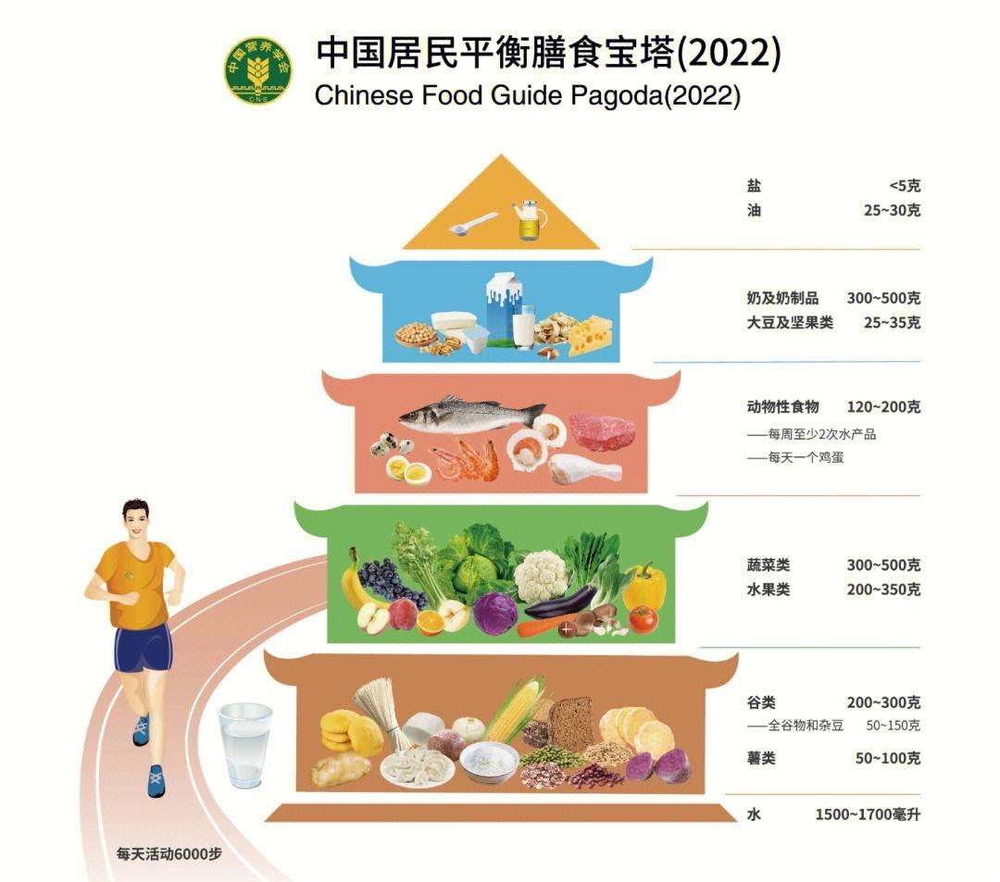
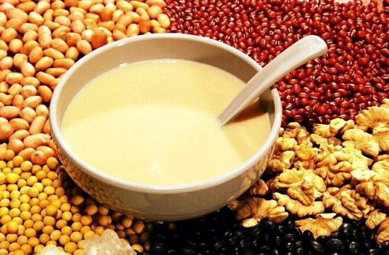

⛹️
三餐配餐营养标准：
1.
根据“中国居民膳食营养素参考摄入量”的标准，设计出平均每人每天对各种营养素的需要量来进行配餐。早餐热能和各种营养素的供给量约占全日总需要量的
30% 左右，午餐占 40%，晚餐占 30%。每人每天约需 2000-2400
千卡热能摄入，其中 12-15% 的能量来自蛋白质，25-30% 来自脂肪，60-65%
来自碳水化合物。
2. 配制原则：
- 1）食物多样，粮谷为主，保证乳类、蛋类，增加蔬菜、水果。
- 2）保证吃好早餐，吃饱午餐，吃少晚餐，三餐比为 3:4:3。
- 3）少吃零食，少饮用含糖及碳酸类饮料，控制食糖的摄入。
- 4）每日饮奶和喝 6-8 杯水。
3. 全天用油均建议用色拉油 25 克。
大学生饮食，除应保证足够的粮食以补充热量需要外，还应补充足够的、多样的副食品，一般每人每天平均需供给肉类
75~100 克，豆类 50~100 克，鸡蛋 1~2 个，牛奶 250 毫升，蔬菜 500
克及水果 1~2
个，基本能满足一天各种营养索的需要。膳食中的蛋白质最好以动物蛋白为主，优质蛋白质应占总蛋白量的
60 ％，并应平均分配在一日三餐中。
我国膳食中比较容易缺乏和不足的营养素还有钙、铁、维生素 A
、核黄素等。特别是在集体食堂就餐的大学生更应注意预防上述营养缺乏。

缺铁，应选食含铁丰富的且吸收利用率高的猪肝、瘦肉、木耳、红枣、海带等食物。
维生素 A
和核黄素是我们膳食难以满足需要量的两种维生素，而这两种维生素又与视力有关。大学生使用眼睛的时间较长，更须特别注意这两种维生素的补充。含维生素
A
和核黄素丰富的食物除猪肝、鸡蛋、牛奶外，黄绿色蔬菜中含量也较丰富。如每天能进食
250
克以上的黄绿色蔬菜，就能提高这两种维生素的摄入量，从而满足营养要求。
钙和碘元素对大学生的身体发育和适应繁重的学生任务具有重要意义。

钙的主要食物来源是奶类和豆制品，每天饮用 250 毫升牛奶或豆浆，或食用 50
克以上的豆制品，能较好地满足钙的需要。碘的主要食物来源是海产品和碘盐，建议每天食用一定量的海产品，并坚持使用碘盐。
每天膳食中应注意选用牛奶、鸡蛋、大豆、虾皮、海带、紫菜、各种海鱼等含钙和碘丰富的食物。
卵磷脂是构成神经细胞和脑细胞代谢的重要物质，有人试验，用大豆磷脂给正常人服用，精力比服用前充沛，学习和工作的效率也大大增加。富含磷脂的食物有鸡蛋、豆类、瘦肉、肝、牛奶等。